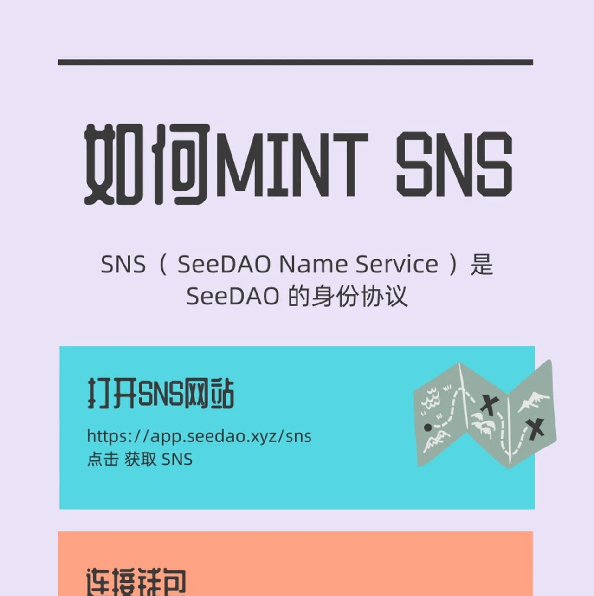

春节有礼｜Mint SNS，领取你的数字城邦身份
作者: SeeDAO
分类:
SeeDAO, SNS
Mint SNS，解锁城邦身份权益，更有迷你春联小礼品包邮到家🎁

龙年春节临近，SeeDAO准备了应节的迷你春联给我们的成员，包邮到家 🎁现在只要Mint SNS，不仅可解琐权益、获得通往数字城邦的身份，更可收到手机春联 ~全称：SeeDAO Name Service，是 SeeDAO 数字城邦的身份协议，也是你在 SeeDAO 中的独有昵称，能够连接城邦生态中的所有场景和应用。
当一个人开始拥有自己的 SeeDAO Name (eg: happy.seedao)，他的一切关系和历史就能在城邦的技术系统中被记录和承认，意味着真正迈入城邦的大门，所有的城邦应用，都将支持你的个人域名！SeeDAO是一个致力于连接100万Web3游民的数字城邦。从具体形态来看，城邦由一个统一的网络空间和分散在不同地域的物理节点(线下空间)共同构成。自2021年11月23日诞生以来，SeeDAO不断发展，目前成员已经超过1万名，贡献者超过1000人，核心贡献者超过500人。SeeDAO成员遍及全球25个国家，形成了在地域上广泛分布的线下网络。SeeDAO也是一个以追求 “好的生活” 为目的的去中心化自主世界。2024 真诚欢迎你加入我们的数字城邦，现在 Mint SNS 更可获得SeeDAO手机春联一份
总共200份，先到先得！
(包邮地址:中国大陆)Step 1 👉 Mint SNS
注册链接：
https://app.seedao.xyz/snsStep 2 👉 填写地址，礼物空投到家~
填写地址链接：
https://tally.so/r/woGpXXhttps://discord.com/channels/841189467128594442/1185363643261534218